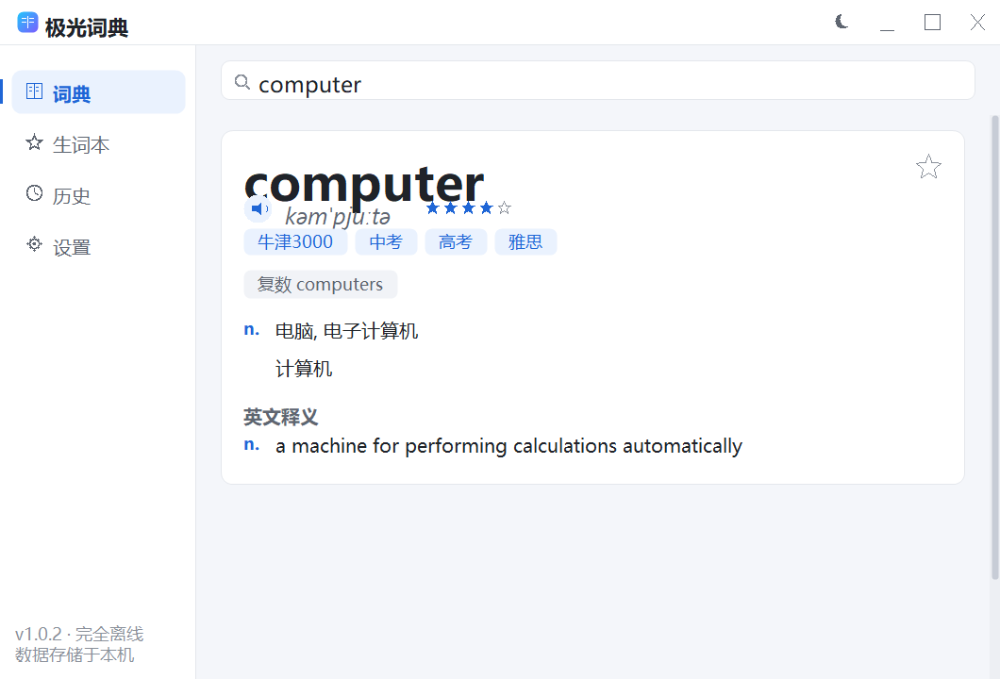
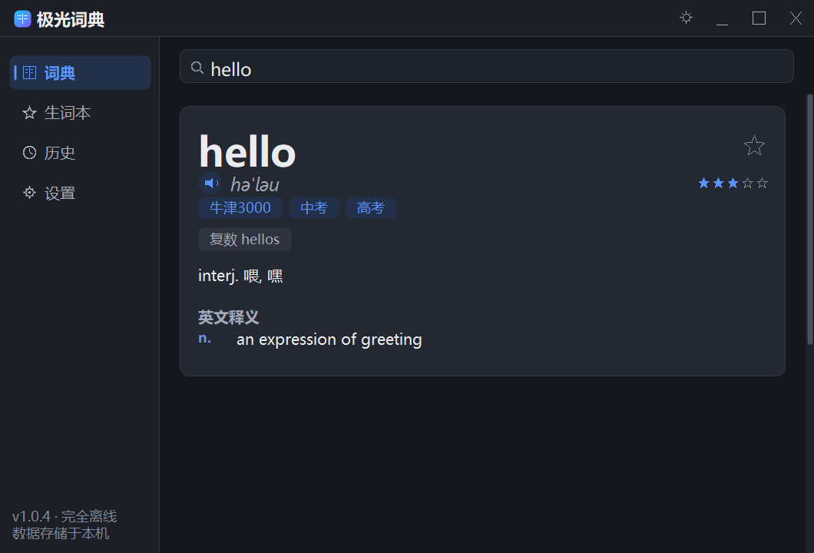
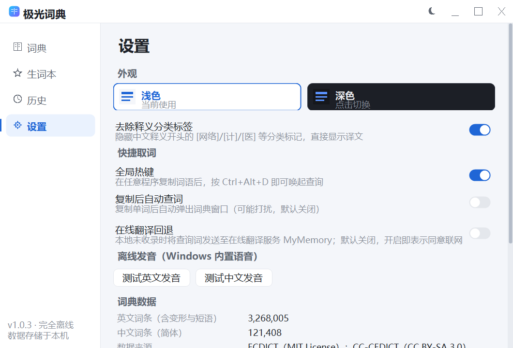

单文件、免安装、零运行库依赖。内置 326 万英文词条与 12 万中文词条，自研检索内核毫秒响应；在线翻译与自动更新为可选功能、默认关闭，按需一键开启。



对标主流专业词典，从内核到界面全部自研，兼顾速度、美观与隐私。
词库随程序本地存储，开箱不联网，断网照常可用；不发起追踪、不收集任何个人数据。
326 万英文词条（含变形、短语、考试标签）与 12 万中文词条（含拼音、繁体）。
检索、Trie 索引、中文分词、拼写纠错、词形还原全部自研，查询毫秒级响应。
默认关闭；手动开启后，本地未收录时才在线翻译，查询词仅在此时发送。
默认关闭；可手动检查或开启启动检查，下载经 SHA256 校验、更新前备份、失败回滚。
一键收藏生词，闪卡复习巩固，支持导出纯文本与 Anki 牌组格式。
英文、中文双语音，基于 Windows 内置语音合成，无需联网即可朗读。
精美自绘界面与浅色/深色主题，支持全局热键 Ctrl+Alt+D 与复制后查词。